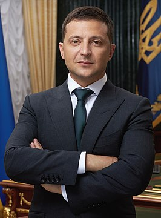

Біографія:
-

⠀⠀⠀Володимир Олександрович Зеленський народився 25 січня 1978 року в Кривому Розі в єврейській сім'ї. Батько — Олександр Зеленський — доктор технічних наук, професор, завкафедри інформатики та інформаційних технологій Криворізького економічного інституту, мати Римма працювала інженером, дід Семен Зеленський брав участь в Другій світовій війні. Перед вступом до другого класу криворізької школи (потім — гімназії) № 95 жив чотири роки в Монголії (у місті Ерденет), де батько працював на будівництві гірничо-збагачувального комбінату. У 16 років склав TOEFL у Дніпрі й отримав грант на освіту в Ізраїлі, але не поїхав, бо батько не дозволив. Юридичну освіту здобув у 2000 році на факультеті правознавства Криворізького економічного інституту Київського економічного університету імені Вадима Гетьмана. За фахом ніколи не працював, за винятком двох місяців практики.
⠀⠀⠀У студентські роки захопився КВК, створив театр мініатюр «Беспризорник» (укр. Безпритульник). Водночас Зеленського запросили в команду КВК «Запоріжжя — Кривий Ріг — Транзит». Незабаром Володимир став не тільки танцювати в команді, а й виконувати ролі. У ній він став чемпіоном Вищої ліги КВК 1997 року. Водночас із ним у команду прийшли майбутні актори «Студії Квартал-95»: Денис Манжосов, Юрій Крапов, Олександр Пікалов. Трохи пізніше створили команду «Збірна Кривого Рогу», а 1997 року з'явилась команда «95-й квартал». Володимир Зеленський став у ній не тільки капітаном і актором, а й автором більшості номерів. З 1999 до 2003 року «95-й квартал» виступав у Вищій лізі КВК, учасники команди багато часу проводили в Москві, постійно гастролювали по СНД. Зеленський писав жарти для команди, й також сценарії для корпоративних свят, телепередач, концертів тощо. 2003 року відбувався конфлікт «95-го кварталу» з компанією «Амік». Володимиру Зеленському запропонували залишитися в КВК, але без команди — як автор і редактор. Втім, Зеленський відмовився і залишив КВК. Скориставшись вимушеною відпусткою, одружився з авторкою команди Оленою Кияшко, з якою зустрічався понад 7 років. 2004 року народилась донька Олександра, а 2013-го — син Кирило.
⠀⠀⠀Наприкінці 2003 року телеканал «1+1» запропонував «95-му кварталу» зробити серію концертів, що складатимуться з найкращих номерів команди. 2004 року команда починає готувати свій найвідоміший проєкт, водночас підробляючи в різних телепередачах. Володимир веде кулінарне шоу «Містер Кук». Всі доходи вкладаються в спільний проєкт і 2005 року на телеканалі «Інтер» стартує телешоу «Вечірній квартал», ідеологом, автором, режисером і провідним актором якого став Володимир Зеленський. Шоу швидко набрало популярність і незабаром за рейтингами серед української аудиторії випередило КВК і «Comedy Club». Критики відносять «Вечірній квартал» до політичного кабаре — одного з традиційних театральних жанрів, характерного радше для Європи. Згодом команда «95-й квартал» переросла в «Студію Квартал-95», власниками якої є Володимир Зеленський, Борис і Сергій Шефір. Студія випускає декілька проєктів («Вечірній квартал», «Бійцівський клуб», «Україно, вставай»), пише сценарії для телепередач («Пісня року», «Полундра»), мюзиклів («За двома зайцями», «Три мушкетери», «Дуже новорічне кіно, або ніч у музеї»), фільмів та корпоративів. У складі «Студії Квартал-95» виступав із волонтерськими концертами в АТО та жертвував кошти на потреби АТО. За фінансову допомогу українській армії проти нього в Росії порушено кримінальну справу 2015 року. У квітні 2019 року Зеленський заявив, що виходить із бізнесу в «Студії Квартал 95».
| Політичні сили та відомі зірки | Стан |
|---|---|
| Сергій Лещенко | Підтримує |
| Олександр Шевченко | Підтримує |
| Олександр Данилюк | Підтримує |
| Міхеїл Саакашвілі | Підтримує |
| Оля Полякова | Підтримує |
| Сергій Сивохо | Підтримує |
| Камалія | Підтримує |
| 95-Квартал | Підтримує |